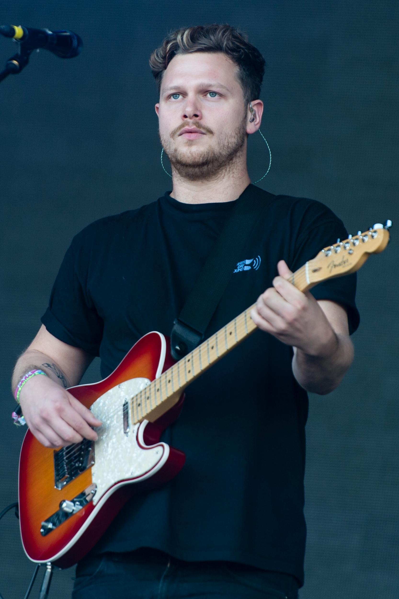
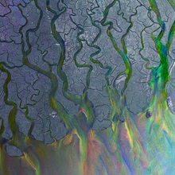
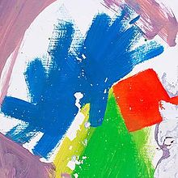
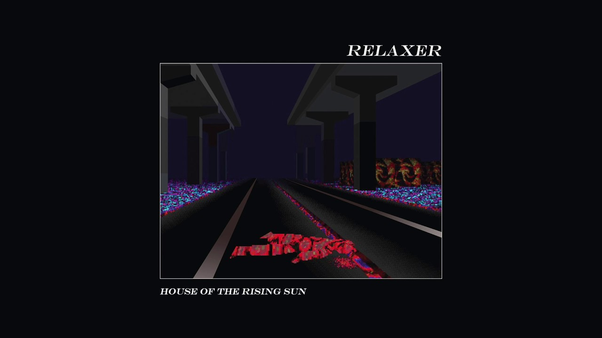

Home
One of my Favorite Bands: Alt-J
A Quick Description of Alt-J:
Alt-J is an English indie rock band formed in 2007 in Leeds.There are four members within the band, which are:
Joe Newman (Guitar/Lead Vocals)

Thom Sonny Green (Drums)
 Gus Unger-Hamilton (Keyboard/Vocals)
Gwil Sainsbury (Guitar/Bass)
Gus Unger-Hamilton (Keyboard/Vocals)
Gwil Sainsbury (Guitar/Bass)
My Favorite three studio albums are:
An Awesome Wave

I really enjoy this album. It's by far one of my top favorites for music. It's an awesome wave of fun, just like the tile of the album. This is Alt-J's first record album, and I personally believe it's their best work!
This Is All Yours

This Album is Alt-J's second album recorded and probably one of their most popular songs. I actually discovered their band one day through the radio. The radio statio was playing a popular song off of this album!
Relaxer

Their latest album, Relaxer takes the ablums name to heart as most of the songs are relaxing! However, some of the had strong emotional themes and tones. I enjoy listening to this album when I study or do work!